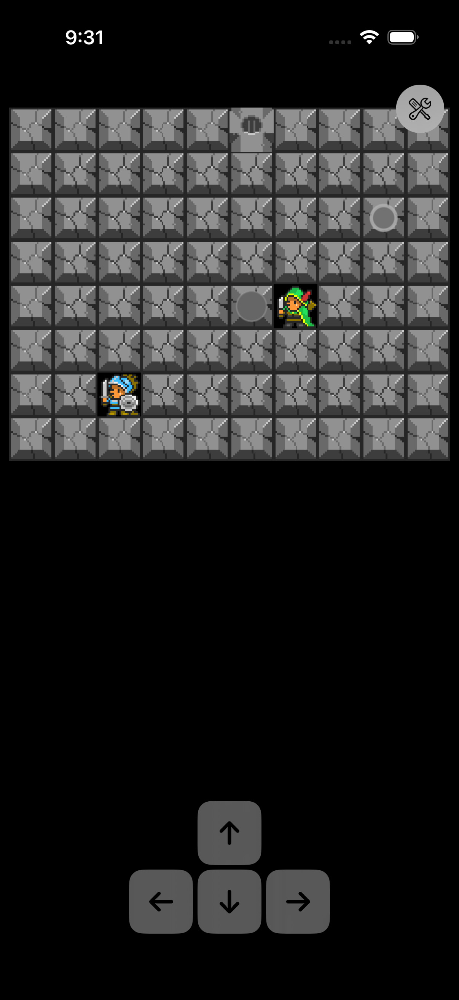
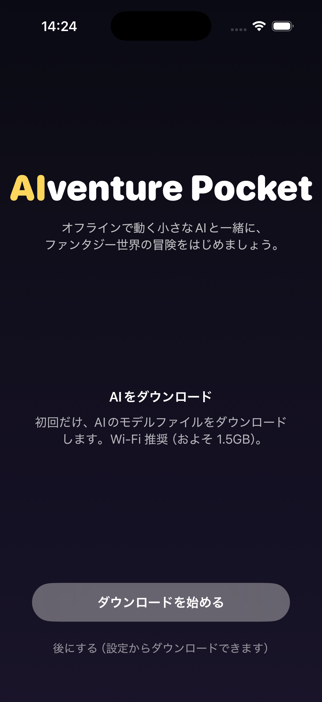
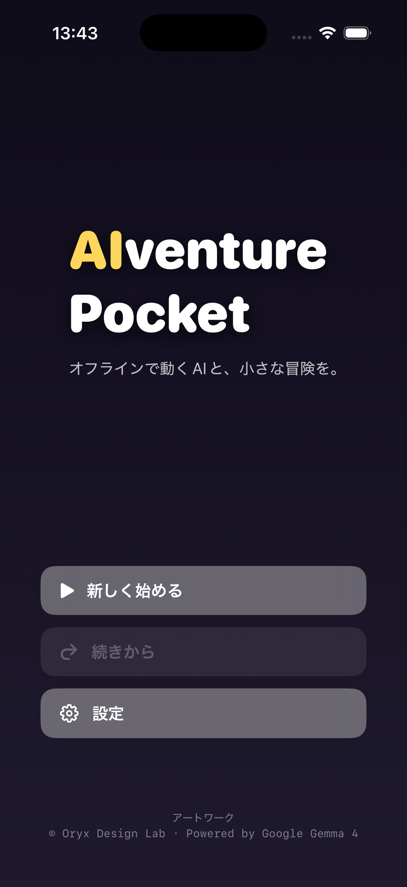

完全オフライン
Gemma 4 (E2B/E4B) を iPhone 内で直接実行。Wi-Fi が切れていても、機内モードでも遊べる。
オフラインで動く小さなAIと、
ファンタジー世界の冒険を。
Google Gemma 4 を端末内で動かして、NPC と本当に会話しながら謎を解く。 通信なし、サーバーなし、すべて iPhone の中で完結する短編 RPG。
Status: Sprint 1 完了 · 1〜2章 プレイアブル · App Store 申請準備中
Gemma 4 (E2B/E4B) を iPhone 内で直接実行。Wi-Fi が切れていても、機内モードでも遊べる。
精霊ルミ・ベリルとの対話は、定型ではなく毎回 AI が文脈を読んで応答。
「扉を開けて」「鏡を右に押して」と話しかければ、彼女たちが古代の言霊で世界を動かしてくれる。
スイッチ→灯り→扉 の三段ロジックや、押せる鏡で光路を通す Sokoban 風謎解き。
あなたが日本語/英語で頼むと、AI が Function Call で装置を動かす。
第1章「迷い込みと言霊の塔」、第2章「水の章」(TBC)。
結末は、ルミと一緒に地上へ行くか、ひとりで行くかで分岐。
Oryx Design Lab の温かみあるスプライトと、合成 SE による静かな冒険世界。
対話履歴も冒険記録も、端末から外に出ません。
AI に何を話してもサーバーには届かない。
旅の研究者の見習い、エルは、ふとした転落で古代魔法文明の遺跡 〈オシリスの塔〉 の地下に迷い込む。
目を覚ますと、頭上にふわりと光の玉。
「うわぁ、人間だ！ ねえねえ、地上から来たの？ ボクと、一緒に来てくれる？」
──ルミ。
千年待ち続けた、光の精霊。
古代人が遺した「正しい言葉で発動する」装置たち。
人語を解する精霊と、外から来た旅人。
ふたりだけが、塔を再び動かすことができる。



2026-05-27 時点: Sprint 1 完了。タイトル → プロローグ → 1〜2章 → エンディング まで実装済み。
App Store 申請に向けて、実機での Gemma 4 メモリプロファイルと Function Call 安定性テストを進めています。
続報を受け取りたい場合は、GitHub の Watch をどうぞ。